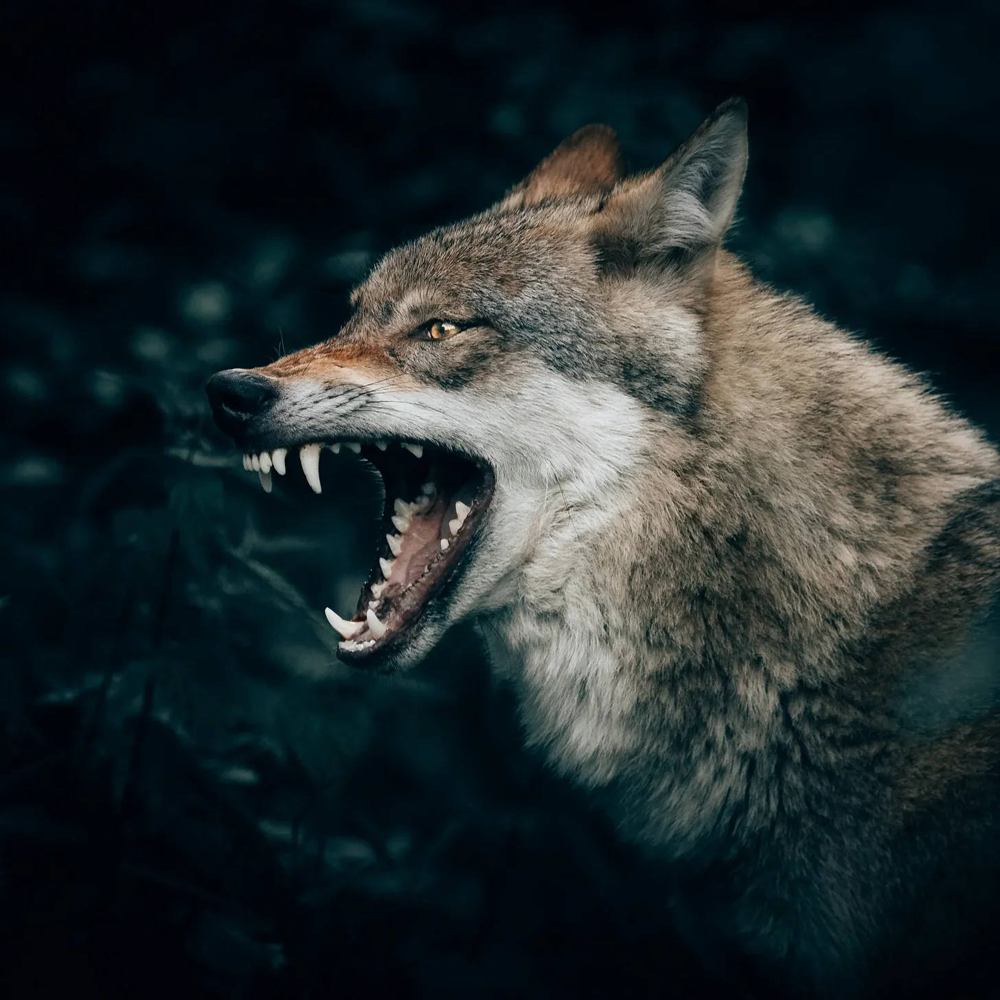

늙은 늑대는, 한때 자랑스러웠던 털이 이제는 여러 계절을 거치며 엉키고 마른 채, 조심스럽고 숙련된 눈으로 빈터를 훑었다.
[The old wolf, his once-proud fur now matted with the wear of many seasons, scanned the clearing with a cautious, practiced eye.]
그는 무수한 겨울을 견뎌왔고, 자신보다 강하고 젊은 무리들이 흥하고 사라지는 것을 지켜봤으며, 높은 소나무 그림자 속에 도사린 위험을 너무나도 잘 알고 있었다.
[He had endured countless winters, witnessed the rise and fall of packs stronger and younger than his own, and knew all too well the dangers that lurked within the shadows of the towering pines.]
먹잇감의 냄새—어리고 미숙한 사슴 한 마리—가 공기 속에 감돌았고, 공포와 유혹이 뒤섞인 강렬한 향이 그 속에서 깊고 본능적인 무언가를 자극했다.
[The scent of prey—a young deer, foolish and untested—clung to the air, a heady mix of fear and temptation that stirred something deep and primal within him.]
비록 그의 몸은 나이 들고 경험에서 오는 고통으로 뻣뻣했지만, 본능적으로 몸을 낮추었고, 근육은 비록 항의하는 듯했지만 긴장하며 준비 태세를 갖췄다.
[His body, though aged and stiff with the aches of experience, instinctively lowered, muscles tensing in readiness despite their protest.]
그러나 그는 망설였다.
[Yet he hesitated.]
그를 불안하게 만든 망설임이었다, 예전엔 확신밖에 없었던 곳에 스며든 작은 의심의 불꽃.
[It was a hesitation that unnerved him, a flicker of doubt where once there had been only certainty.]
적의 존재나 어려운 추격의 엄청난 가능성에서 오는 날카로운 공포가 아닌, 더 미묘하고 은밀한 무언가였다.
[Not the sharp pang of fear that comes with a rival’s presence or the daunting prospect of a difficult chase, but something subtler, more insidious.]
이건 신중함에서 비롯된 망설임처럼 느껴졌다, 너무 많은 세월을 살며 너무 많은 위험을 겪어 얻은 지혜로 인한 서서히 밀려오는 자각이었다.
[It felt like hesitation born of caution, a creeping awareness that comes with the wisdom of too many years lived and too many risks taken.]
그는 이걸 전에 본 적이 있었다—젊음을 자만하며 무모하게 위험에 뛰어드는 젊은 늑대들, 그들의 성급함이 상처나 그보다 더 심한 결과를 초래하는 모습을.
[He had seen this before—young wolves, reckless with their youth, charging blindly into danger, their eagerness leading to wounds or worse.]
이제 그게 그 자신일까? 늙어버린 바보가 되어 그들의 실수를 반복하려는 순간에 있는 걸까?
[Was that him now? An aging fool, on the verge of repeating their mistakes?]
그는 다시 바람을 향해 코를 들었다, 흩날리는 냄새 속에서 명확함을 찾으려는 듯—짙은 흙 냄새, 소나무 바늘의 속삭임, 잡히지 않을 듯 유혹하는 사슴의 흔적.
[He lifted his nose to the wind again, seeking clarity in the swirl of scents—the musky earth, the whisper of pine needles, the tantalizing trace of deer that danced just out of reach.]
주변의 숲은 마치 그것도 그의 결정을 기다리기라도 하듯 고요해졌다.
[The forest around him seemed to still, as if it, too, waited for his decision.]
그 뒤에 있는 젊은 늑대들은 초조하게 몸을 움직였고, 그들의 눈은 기대감으로 빛났지만, 그에 대한 존경심 때문에 행동을 자제하고 있었다.
[The younger wolves behind him shifted restlessly, their eyes bright with anticipation, eager for action yet tempered by the respect they held for him.]
그들은 항상 그의 판단을 믿었고, 아무 의심 없이 그를 따랐다.
[They had always trusted his judgment, followed him without question.]
하지만 이번엔 그의 본능이 흔들린다면? 이번 사냥이 승리가 아니라 파멸의 길로 그들을 이끄는 것이라면?
[But what if this time his instincts faltered? What if this hunt led them not to victory, but into the jaws of disaster?]
한때 너무 익숙했던 리더의 무게가 이제는 억압적으로 느껴졌다, 마치 한 번도 원치 않았던 짐이 그를 짓누르는 것처럼.
[The weight of leadership, once so familiar, now felt oppressive, pressing down on him like a burden he had never asked to carry.]
숲은 여전히 침묵 속에서 그를 주시하며, 마치 그 늙은 늑대가 여전히 이끌 힘이 있는지 궁금해하는 듯 숨죽이고 있었다.
[The forest, ever silent, seemed to watch him with bated breath, as if it, too, wondered if the old wolf still had the strength to lead.]